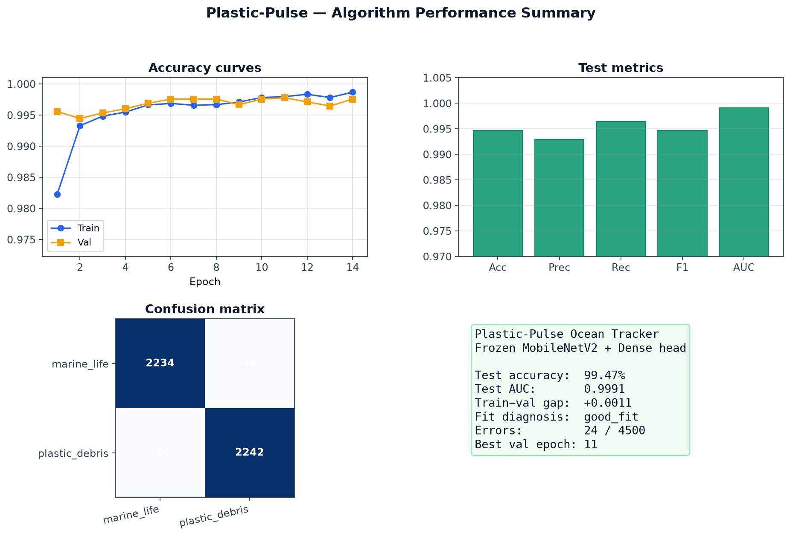
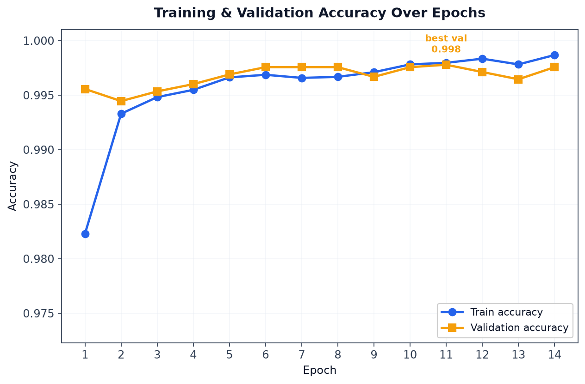
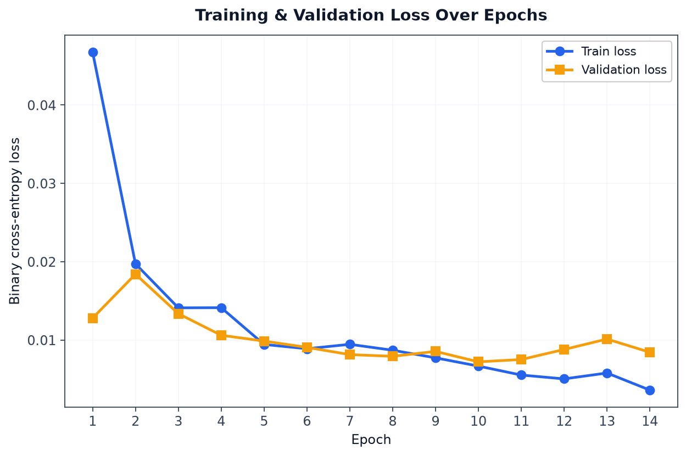
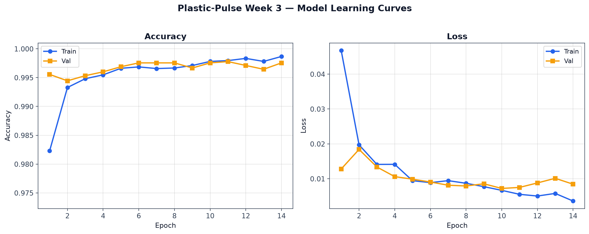
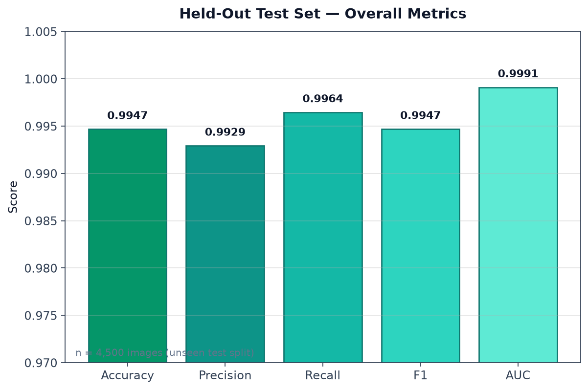
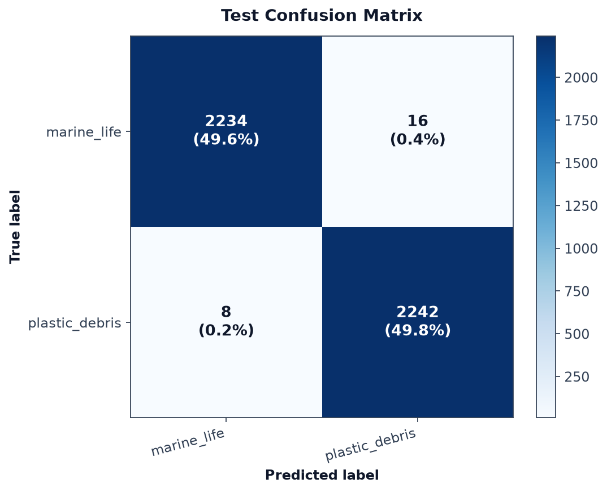
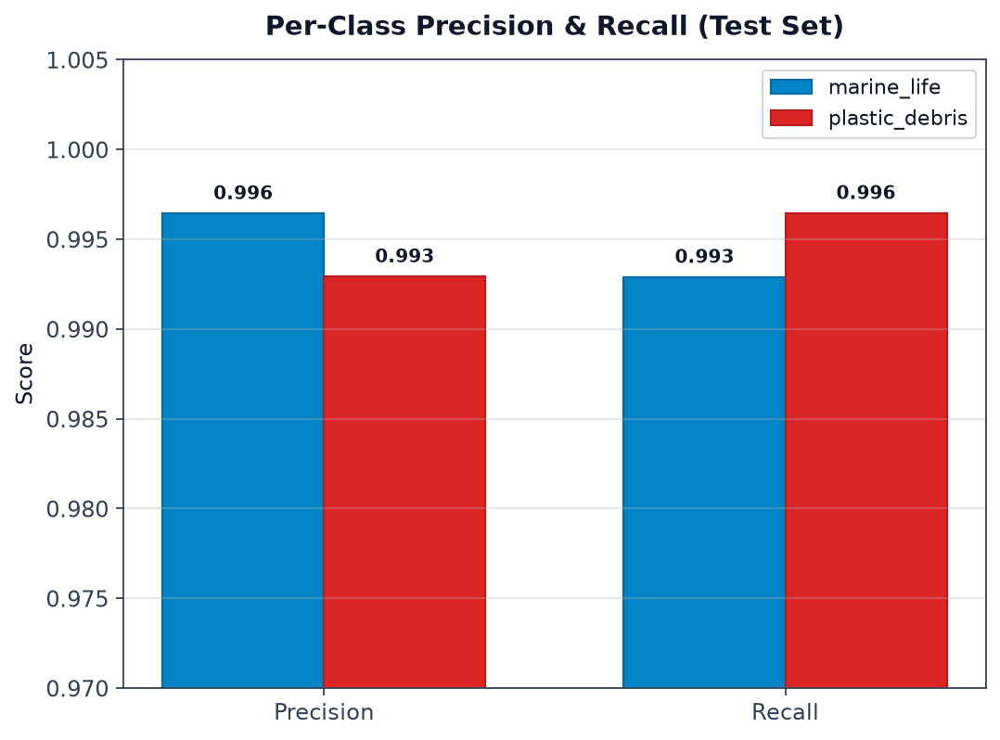
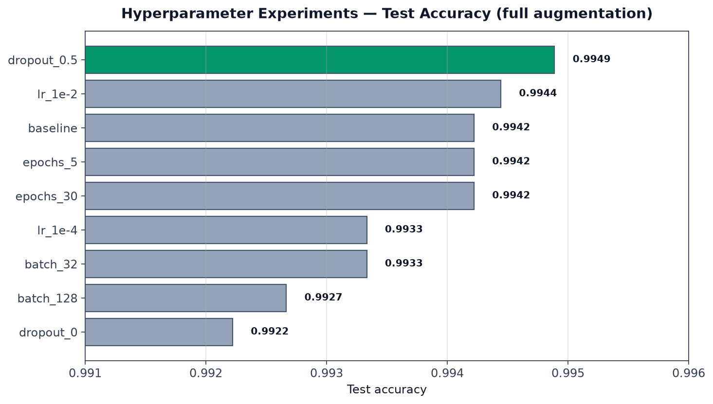

Plastic-Pulse Ocean Tracker — train / validate / test the frozen MobileNetV2 + Dense head classifier
Use this one image for a quick overview: learning curves, test metrics, confusion matrix, and fit summary.

14 epochs ran (early stopping). Train and validation accuracy both rise quickly and stay above 99.5% — the model learns the marine-life vs plastic-debris boundary without a large train/val gap.



Final evaluation on 4,500 unseen images (750 source stems × 6 augmentations). All metrics exceed 99.2%.

| Accuracy | 0.9947 |
|---|---|
| Precision | 0.9929 |
| Recall | 0.9964 |
| F1 | 0.9947 |
| AUC | 0.9991 |
24 total errors: 16 marine_life called plastic_debris, 8 plastic_debris called marine_life. The model is slightly biased toward detecting plastic.

Both classes perform similarly — balanced binary classifier with high recall on plastic debris (99.6%).

12 runs on the same test split. dropout=0.5 achieved the best test accuracy among fair full-augmentation experiments.

Full write-up: experiments/EXPERIMENT_REPORT.md
| Split | Stems | Images | marine_life | plastic_debris |
|---|---|---|---|---|
| Train | 3,500 | 21,000 | 10,500 | 10,500 |
| Val | 750 | 4,500 | 2,250 | 2,250 |
| Test | 750 | 4,500 | 2,250 | 2,250 |
All 6 augmentations of one source image stay in the same split.
good_fit — train/val accuracy gap ≈ +0.001; test tracks validation.
Val loss rises slightly late in training while train loss keeps falling. Early stopping restores best weights. Dropout 0.5 improved generalization vs 0.3 or 0.0.
python scripts/generate_presentation_graphs.py
python scripts/train_model.py --epochs 20 --batch-size 64 --dropout 0.5
Live demo: python scripts/predict_demo.py --show